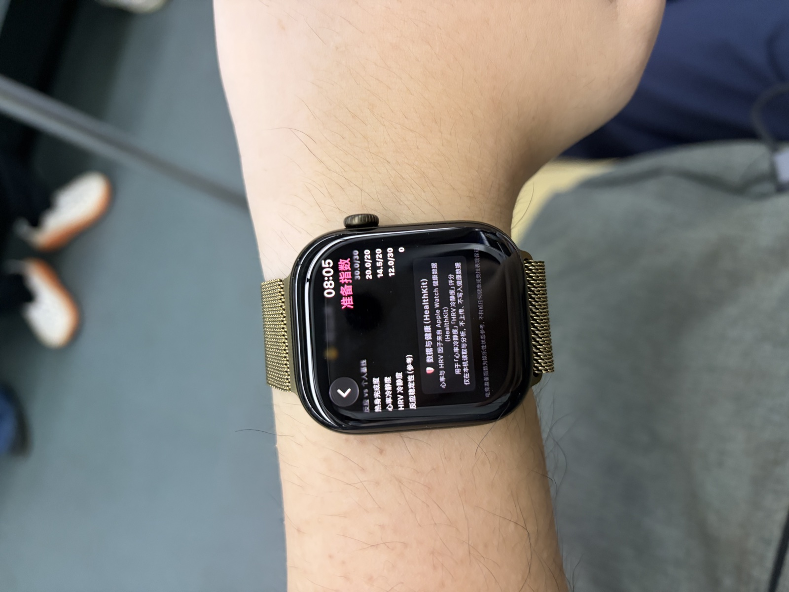
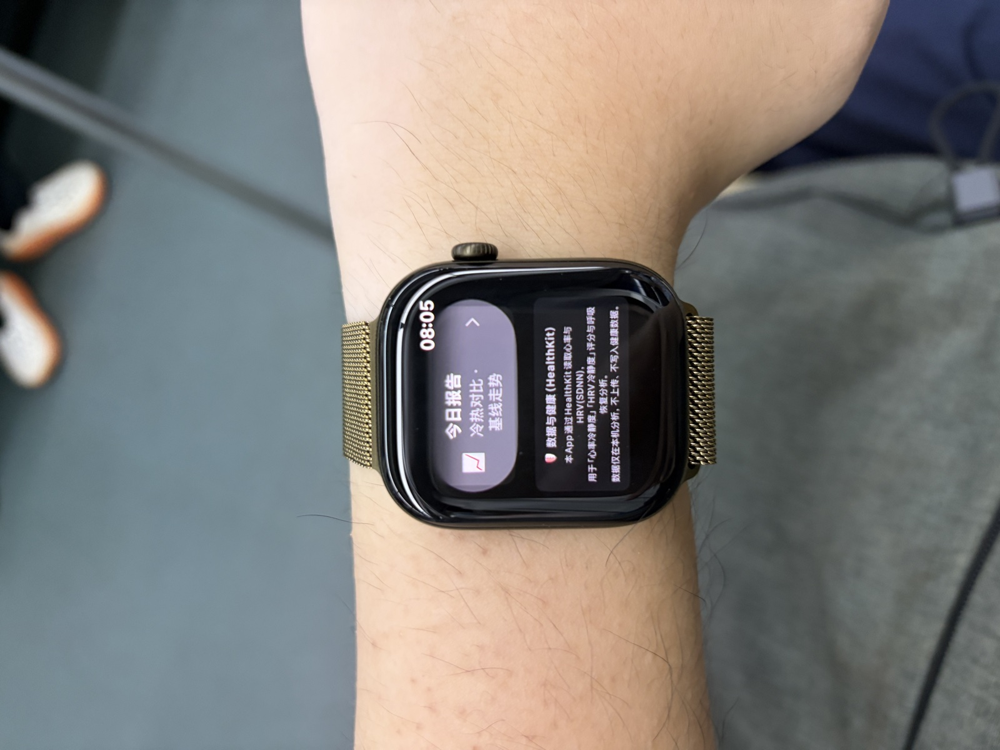
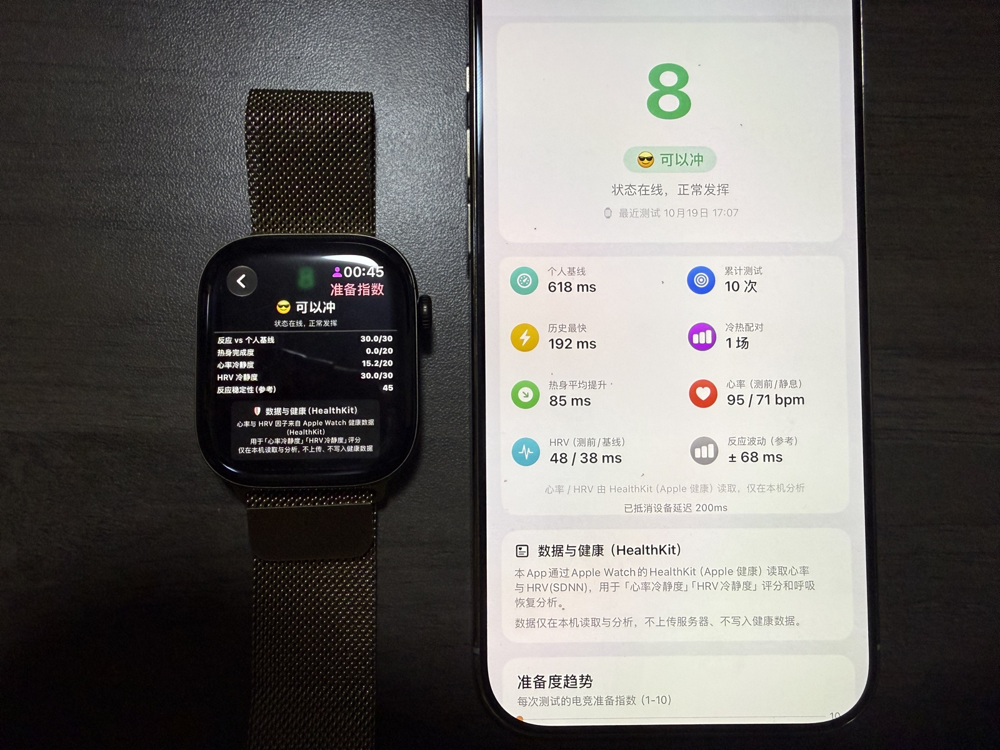

Esports Readiness Index — HealthKit Usage Identification
App Review evidence for Guideline 2.5.1. The app uses HealthKit (heart rate and HRV) and clearly identifies this functionality in the user interface. CareKit is not used in this app.
App: Esports Readiness Index 1.0 (12)Platforms: Apple Watch (watchOS), iPhone (iOS)HealthKit data read: Heart Rate, HRV (SDNN)HealthKit data written: none
How HealthKit functionality is identified in the UI
Every screen that displays HealthKit-derived data shows a dedicated disclosure card titled “Data & Health (HealthKit)”. The card states which data is read (heart rate and HRV), for what purpose (the “Calmness” scores and breathing recovery analysis), and the privacy guarantees (on-device analysis only; no upload; no write-back to Health data). Locations:
Apple Watch — main screen: a “Data & Health (HealthKit)” card is placed directly below the score breakdown.
Apple Watch — Today Report / test result screen: the same card is shown below the report.
iPhone — dashboard (including the empty state seen on first launch): the same card is shown at the bottom of the screen.
“Data & Health (HealthKit): This app reads heart rate and HRV (SDNN) through HealthKit for the ‘Heart-Rate Calmness’ and ‘HRV Calmness’ scores and breathing recovery analysis. Data is analyzed on-device only — it is never uploaded and never written back to Health data.”
Photo 1 — Apple Watch: test result screen with the HealthKit disclosure card

The “Data & Health (HealthKit)” card is visible at the bottom of the test result screen. The text is fully readable at normal shooting distance.
Photo 2 — Apple Watch: Today Report screen with the HealthKit disclosure card

Today Report screen: the card states that heart rate and HRV are read via HealthKit, used for two scores and breathing recovery analysis, on-device only, with no upload and no write-back.
Photo 3 — Apple Watch and iPhone side by side, both showing the disclosure card

Both devices display the “Data & Health (HealthKit)” card simultaneously: the Apple Watch main screen and the iPhone dashboard.
Screen recording — iPhone
iPhone screen recording: opening the app and scrolling to the “Data & Health (HealthKit)” card on the dashboard.
Screen recording — Apple Watch
Apple Watch recording. Note: the watch screen is difficult to capture on camera; the photos above show the on-screen text more clearly.
This page is published as review supporting material for Esports Readiness Index 1.0 (12).